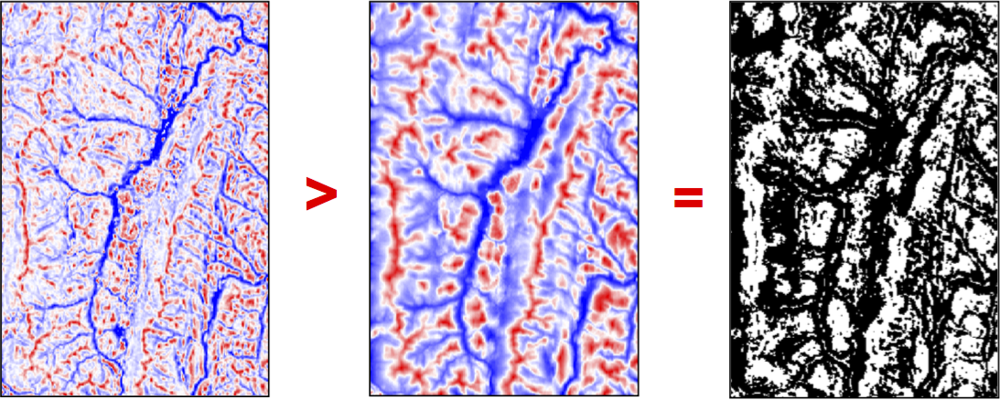

Press 'o' to toggle the slide overview and 'f' for full-screen mode.
Choose the theme in which to view this presentation:
Black -
White -
League -
Sky -
Beige -
Simple
Serif -
Blood -
Night -
Moon -
Solarized
Copyright © John Lindsay, 2015
GEOG*3480
GIS and Spatial Analysis
Basic Raster and Vector
Data Analysis Part 2
John Lindsay
Fall 2015
Remember, this is where the content for the final exam begins
Raster querying: Reclassification
Raster querying: Reclassification
Raster querying: Reclassification
- It is possible to build complex queries involving combinations of query questions in the raster data model by using reclass, map algebra and/or Boolean logical operations, and other spatial analysis operations (e.g. distance, buffering, and area calculations).
- It is possible to perform any spatial query using either the raster or vector data model, but it generally involves more steps using the raster approach
Raster Buffering
- In a raster model, buffer creation is a two-step procedure:
- The distance from each cell to the target cell(s) is calculated
- Using resulting map is reclassified so that cells with values less than the buffer distance are given the same code
Distance in the Raster Model
- Most modern GIS estimate the Euclidean distance of each raster grid cell to the nearest target cell
- Based on the highly efficient, 4-pass distance transform of Shih and Wu (2003)
- Some do not and some offer alternatives based on
spread functions which iteratively calculatedistance through grid cells .
Distance in the Raster Model
- Why use
spread to calculate distance?- Until Shih and Wu (2003) spread has been far more efficient to estimate than Euclidean distance
- Spread is a powerful function for performing weighted distance operations, e.g. Least-cost analysis (more to come on this later)
- Spread is less accurate but more powerful
Local Operations: Raster Map Overlay
- How are discrete spatial entities represented in raster?
- Point is a single cell
- Line is a cell-wide string of cells
- Area is a contiguous group of cells
- Raster map overlay works on a cell-by-cell basis
- Operations are performed on individual cells from two or more input layers to produce a new layer
Raster overlay and map algebra
Comparison Operators
- Equal to, not equal to, greater than, less than, greater than or equal to, less than or equal to (= , <>, >, < , >= , <=)
- > and < operators are like a simple reclassification
- Input images are not necessarily Boolean images but the output image is always a Boolean
Comparison Operators
Comparison Operators
Comparison Operators
The MIN and MAX Operators
- MIN('Map1', 'Map2') & MAX('Map1', 'Map2', 'Map3')
- Assigns each cell in the output image the minimum (or maximum) value for the corresponding cells in the input maps
- You may have two or more input maps
Mathematical operators
- Map addition, subtraction, multiplication, and division
- One-map/one-constant operations vs. two-map ops
- 'Map1' + 10
- 'Map1' - 'Map2'
- Why might you want to multiply or divide all the values in an image by a constant (e.g. 'Map1' / 3.281)?

Other map algebra possibilities
- Complex mathematical combinations are possible
- e.g. Ln['catchmentAreaMap' / tan('slopeMap')]
- Must be careful not to divide by zero!
Considerations with raster map overlay
- Grid cell resolution...how to cope with incompatible resolutions of input images?
- Scale of input data, i.e. dichotomous (Boolean), nominal (categorical), ordinal, interval, ratio
- Rarely perform a single operation; most GIS analyses require several operations performed in series with several intermediate steps